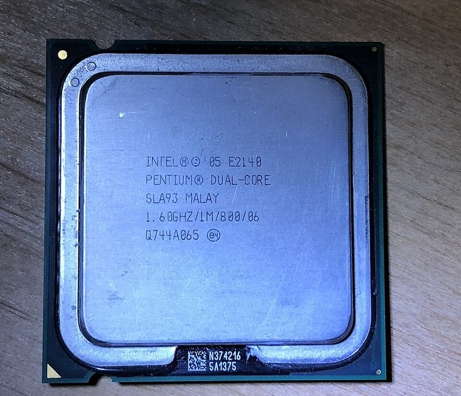

[ PENTIUM ERA PROCESSORS // IDENTIFIED COMPONENT ]
Intel Pentium 60
The original 60 MHz P5 Pentium brought two integer pipelines and integrated floating-point hardware to Intel’s first Pentium desktop systems.

MODEL IDENTIFICATION: Intel Pentium 60. Read the full top marking/OPN, speed grade, package, and stepping from the physical part; do not transfer specifications across similarly named revisions.
Recorded specifications
| Cataloged part | Intel Pentium 60 |
|---|---|
| Era / family | First-generation Pentium (P5), introduced 1993; 60 MHz speed grade. |
| Key specifications | 60 MHz core and 60 MHz bus; 32-bit x86 with 64-bit external data bus; separate 8 KB instruction and 8 KB data L1 caches; integrated FPU; 5 V; 273-pin PGA Socket 4 package. |
| Interface / fit | Socket 4 motherboards specifically designed for the 5 V 60/66 MHz first-generation Pentium are required. It does not fit Socket 5/7 boards. |
| Variants / identification | The 60 MHz part is distinct from 66 MHz and later 3.3 V Pentium variants. Early P5 stepping history includes the FDIV erratum; identify stepping and errata if historically documenting a system. |
Compatibility and service notes
- Socket 4 motherboards specifically designed for the 5 V 60/66 MHz first-generation Pentium are required. It does not fit Socket 5/7 boards.
- The 60 MHz part is distinct from 66 MHz and later 3.3 V Pentium variants. Early P5 stepping history includes the FDIV erratum; identify stepping and errata if historically documenting a system.
- Check the ceramic PGA and all 273 pins carefully. Match board voltage and clock jumper settings; do not install in a visually similar socket unless the board manual explicitly supports it.
- Before installation, compare the exact CPU marking with the motherboard maker’s support list, board revision, BIOS minimum, package/socket, power requirements, and memory type. Do not force a package into a socket.
Service & archival record
Check the ceramic PGA and all 273 pins carefully. Match board voltage and clock jumper settings; do not install in a visually similar socket unless the board manual explicitly supports it.
For a collection record, photograph both sides, retain the full model/OPN and date/lot codes, describe package and contact condition, and record the tested motherboard revision, firmware, cooling, memory, and measured operating conditions. Separate measured observations from published limits.
Sources & further reading
- Intel Pentium processor data sheet (P5 60/66 MHz specifications)Model-specific manufacturer, technical-document, or product-history reference; consult the exact device marking and board revision.
- Intel Pentium processor family errata — stepping-specific engineering referenceModel-specific manufacturer, technical-document, or product-history reference; consult the exact device marking and board revision.
- Intel Pentium introduction and processor-history referencesModel-specific manufacturer, technical-document, or product-history reference; consult the exact device marking and board revision.
Third-party mirrors or historical document indexes may host manufacturer-authored manuals. Check document revision and exact model marking; board compatibility remains specific to its maker and firmware.